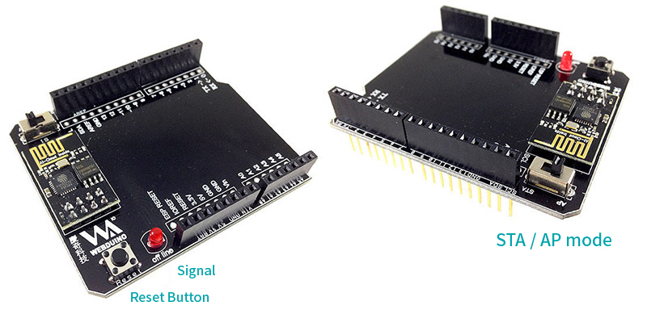

Webduino Fly + Arduino UNO
Arduino UNO + Webduino Fly is the perfect combination for your IoT project! Since Webduino is based on web development languages, controlling Arduino UNO with Webduino Fly is just easier than anything.
For price inquiry, please send us an email at service@webduino.io or call us at 886-7-3388511.
Product Details
- 1. Webduino Fly (Wi-Fi Extension board) *1
- 2. Arduino UNO R3 *1
- 3. USB Cable *1
- 4. Arduino UNO Enclosure *1
Product Images


About Webduino Fly :
- 1. STA mode: for staying in Arduino mode, and for Wi-Fi Setup
- 2. AP mode: for staying in Webduino mode
- 3. Signal: in AP mode, if the device is offline, the signal will light up.
- 4. Button: for reset

Before you use:
The most important thing before you begin using the Webduino is setting up the Wi-Fi. The purpose of the setup is to make the Webduino Development boards connect to the internet automatically. Additionally, Webduino boards follow the Arduino Firmata protocol, so you will have to burn the standard firmware on them. Please check the tutorials as follows.
1. Webduino Fly Wi-Fi Setup
2. Arduino Firmware Download / Burn